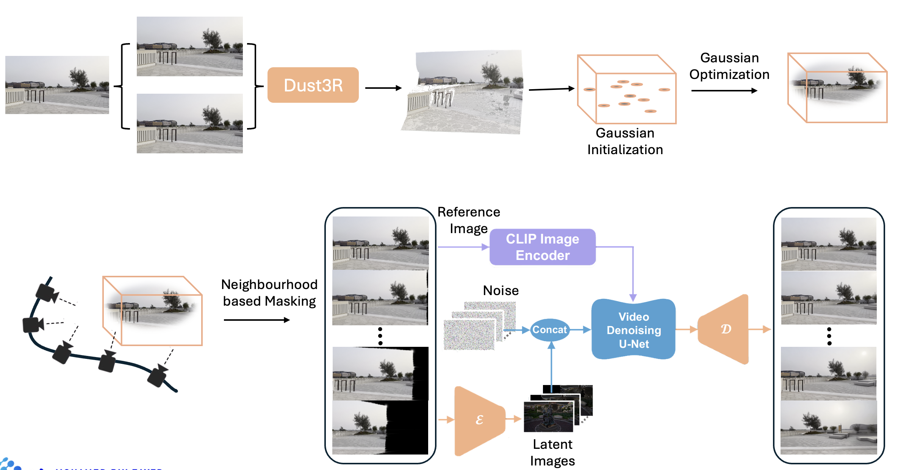
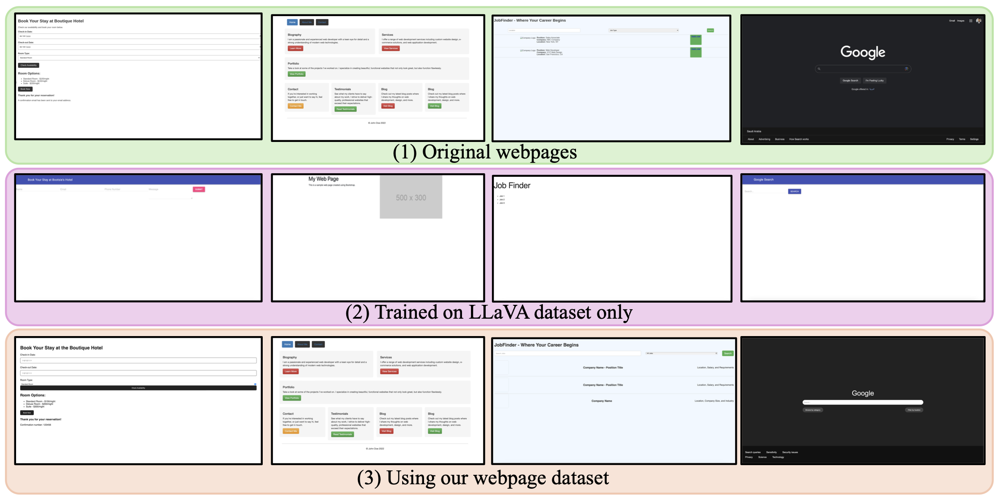
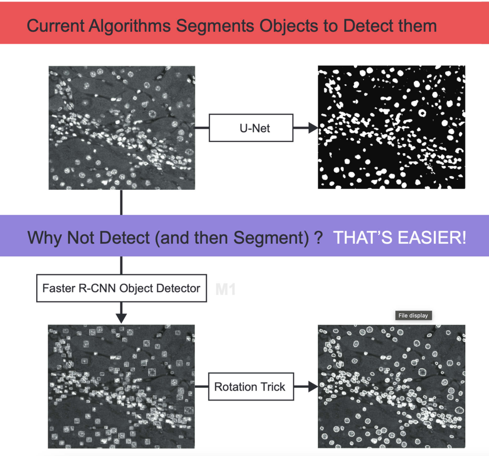
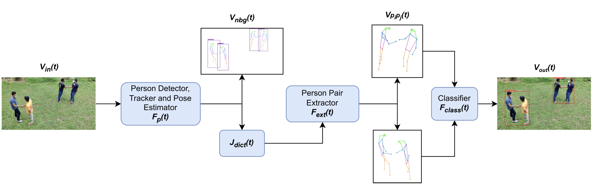

|
News
Here are some of the recent updates in his academic journey.
[Nov 2025] VFace paper was accepted at WACV 2026.
[Jun 2025] Started a new position as a Visiting Researcher at MBZUAI under the supervision of Prof. Ivan Laptev.
[May 2025] Officially graduated with an MSc. in Computer Vision from MBZUAI.(CGPA 3.9/4.0)
[May 2025] Honored with Department Chair's Award for Laika Robot Project, presented by Prof. Ian Reid.
[May 2025] PG-Video-LLaVA paper was accepted at VideoLLMs Workshop at CVPR 2025.
[Oct 2024] Laika Robot demo presented at IROS 2024.
[Sep 2024] Web2Code paper was accepted at NeurIPS 2024.
[June 2024] Started Internship as an Research Assistant under Prof. Ivan Laptev.
[June 2024] Released the paper Web2Code. URL
[Nov 2023] Released the paper PG-Video-LLaVA. URL
[Aug 2023] Admitted MBZUAI with a full scholarship for an MSc. in Computer Vision.
|
|
Research
Rusiru is fascinated by the rapid advancements in computer vision, particularly how models are increasingly able to perceive and understand the world like humans do.
This progress, especially in the field of robotics, is enabling machines to recognize complex scenes and navigate environments more naturally, bringing us closer to seamless human-machine interaction.


|
Towards Geometrically Consistent Novel View Synthesis Using Gaussian Splatting
MBZUAI MSc Thesis
Rusiru Thushara
Supervisors: Prof. Ivan Laptev, Prof. Salman Khan
External Examiners: Prof. Hao Li
Thesis Paper
-
Description: This project tackles single-image novel view synthesis by integrating video diffusion models with Gaussian splatting. The framework leverages diffusion priors conditioned on 3D geometry to achieve photorealistic, geometrically consistent renderings with controllable camera poses, enabling smooth interpolation, realistic occlusion handling, and view-dependent effects for practical single-view 3D reconstruction.
|
|

|
Web2Code: A Large-scale Webpage-to-Code Dataset and Evaluation Framework for Multimodal LLMs
*Sukmin Yun, *Haokun Lin, *Rusiru Thushara, *Mohammad Qazim Bhat, *Yongxin Wang, Zutao Jiang, Mingkai Deng, Jinhong Wang, Tianhua Tao, Junbo Li, Haonan Li, Preslav Nakov, Timothy Baldwin, Zhengzhong Liu, Eric P. Xing, Xiaodan Liang, Zhiqiang Shen
* Equal contribution.
NeurIPS 2024
Paper /
Code /
Project Page /
Dataset
-
Description: Addresses the challenge of MLLMs in understanding webpage screenshots and generating HTML code, proposing a large-scale benchmark dataset and evaluation framework. Extensive experiments show significant improvements in web-to-code generation and general visual tasks.
|
|
|
PG-Video-LLaVA: Pixel Grounding Large Video-Language Models
*Shehan Munasinghe,
*Rusiru Thushara,
Muhammad Maaz, Hanoona Rasheed, Salman Khan, Mubarak Shah, Fahad S. Khan
* Equal contribution.
VideoLLMs Workshop at CVPR 2025
Paper /
Code /
Project Page
-
Description: Extends image-based LLMs to videos understanding, incorporating audio transcripts for enhancedcontext understanding, introducing a baseline framework and benchmark for conversation-driven spatial grounding.
|
|

|
Quantification of Cells in Native Tissues with Object Detection and Weak Supervision
R. Thushara, J. Pradeepkumar, J.J. Corrigan, B.P. Engelward, and D.N. Wadduwage
Abstract accepted for oral presentation at the Optica Imaging Congress 2023
Paper /
Poster
-
Description: Investigation on leveraging deep learning approaches for detecting and quantifying homologousrecombination events in rare fluorescent mutant cells deep within the tissue of RaDR mice Usage of deep learning architectures for object detection, classification, and segmentation.
|
|

|
Real-Time Multiple Dyadic Interaction Detection in Surveillance Videos in the Wild
*IM Insaf, *AAP Perera,
Rusiru Thushara,
GMRI Godaliyadda, MPB Ekanayake, HMVR Herath, JB Ekanayake
ICIIS 2023
Paper
-
Description: This paper proposes a novel computer vision-based system that identifies multiple co-occurring dyadic (two-person) interactions in a crowded scenario and classifies them into six action classes.
|
|
|
Collision free obstacal robots for Swarm Robots Platform.
Rusiru Thushara,
Dinindu Thilakarathne, Heshan Dissanayake, Isuru Navinna, Roshan Ragel
Project Page /
Code /
Demo Video
-
Description: Obstacal bot system for the existing swarm project of University of Peradeniya. This system mainly contains overhead camera setup to localize the obstacle bots. By using this system the users can place the obstacle bots in disired positions or the disired repititive paths. Then the system positions the bots in relavant places without coliding with other robots. For this we are using Partical Repulsion Theory and model the Obstacal bots as charged particals in a Electric Field.
|
|
Experience

|
Harvard University, USA
Research Fellow
Jan 2022 - Dec 2023
|
|
|
University of North Florida, USA
External Research Intern
Jan 2022 - Jul 2022
|
|
Education
|
|
Johns Hopkins University, USA
Doctor of Philosophy (PhD)
Advisor: Prof. Vishal Patel
Aug 2025 – Present
|

|
Mohamed Bin Zayed University of Artificial Intelligence, Abu Dhabi, UAE
Master of Science in Computer Vision
Full Scholarship
GPA: 3.9/4.0
Aug 2023 - May 2025
|

|
University of Peradeniya, Sri Lanka
Bachelor of Science (Engineering) specialized in Computer Engineering
First Class Honours
Nov 2017 - Feb 2023
|
|
|


{kind=link}